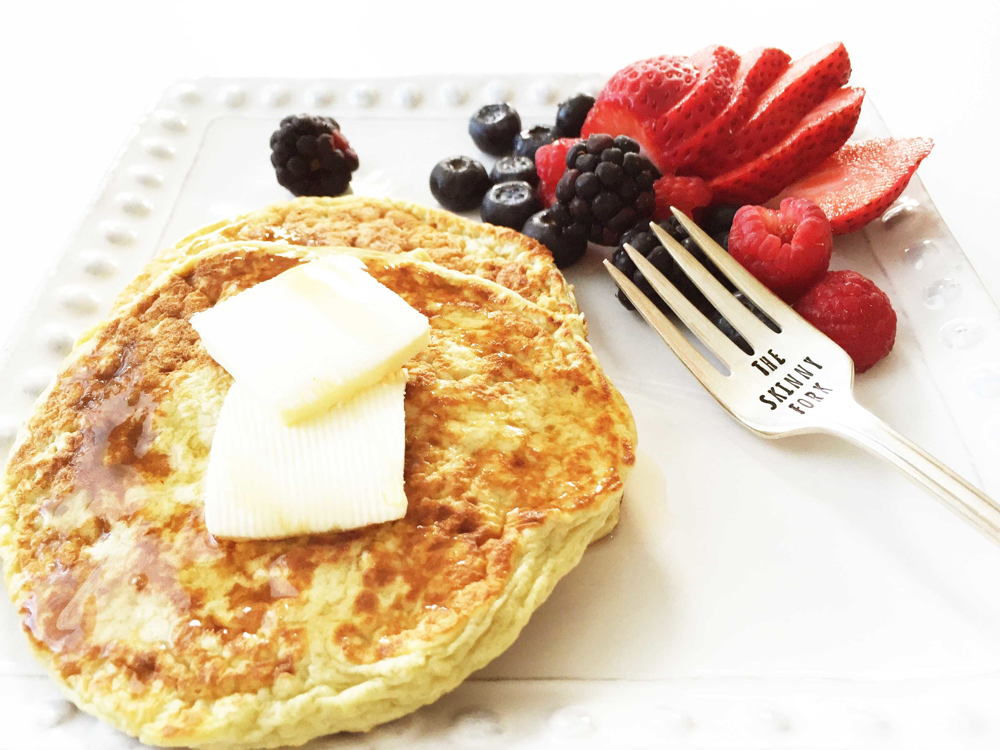

Vanilla Cinnamon Protein Pancakes

Description
These protein pancakes are a great post workout snack. They can be easily be stored in the fridge and can be eaten cold or be reheated in the microwave for 20 to 30 seconds. For an added sweet taste, top them with fruits, sugar-free syrup or sugar-free fruit preserve.
Ingredients
- 1 (16 ounce) container egg whites
- 2 ½ cups instant oats
- 1 cup low-fat cottage cheese
- 1 ½ scoops vanilla protein powder
- 1 tablespoon stevia powder
- ½ teaspoon vanilla extract
- ½ teaspoon ground cinnamon
- cooking spray
Steps
- Combine egg whites, oatmeal, cottage cheese, protein powder, stevia, vanilla extract, and cinnamon in a bowl. Mix well.
- Heat a skillet over medium-high heat. Spray with cooking spray. Pour 1/3 cup batter into the skillet; flatten batter using the back of a measuring cup. Cook until bubbles form, 3 to 4 minutes. Flip and cook until golden on the other side, 2 to 3 minutes. Repeat with the remaining batter.
Home